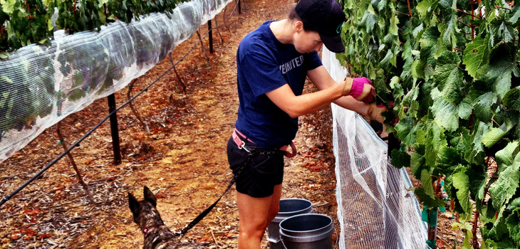
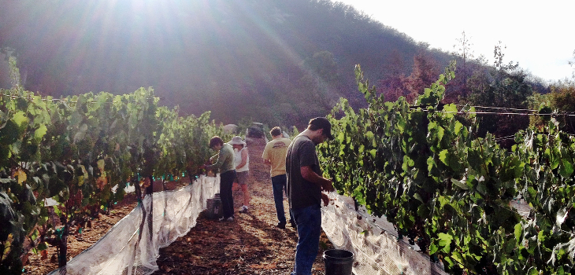
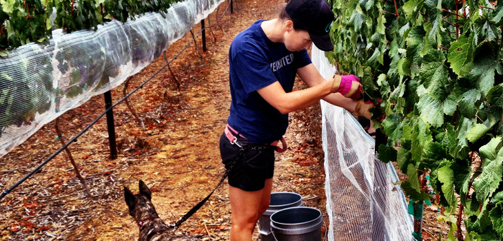
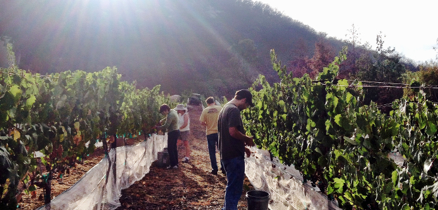

We are an Urban Winery specializing in wines using locally sourced grapes from Southern California vineyards. We are committed to creating the finest quality wines for you to enjoy.
Note that our online ordering page is being revamped. Please call our knowledgeable Customer Service team to place your order at
760-494-0597 extension 103.

 




We have recently moved to 6084 Corte Del Cedro, Carlsbad, CA 92011. Our phone number has stayed the same, so please feel free to give us a call or use the website to order wine for the holidays.
We still don't have that tasting room - so please stay tuned and we will let you know as soon as we do.
We have our newest releases ready for you to purchase. Just click the 'Shop Now!' button on the top left to see our latest selection of available wines, including our award winning 2014 Viognier.
Our 2014 Viognier was recently awarded a Silver Medal in the 2015 Wine Competition and Festival. Only in its fourth year, the Toast of the Coast Wine Competition grew to 592 wines from California and Baja California competing for awards! For a complete list of award winners, visit Toast of the Coast.